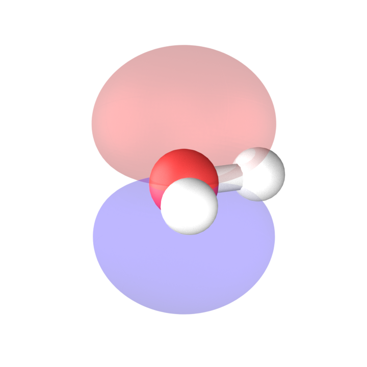
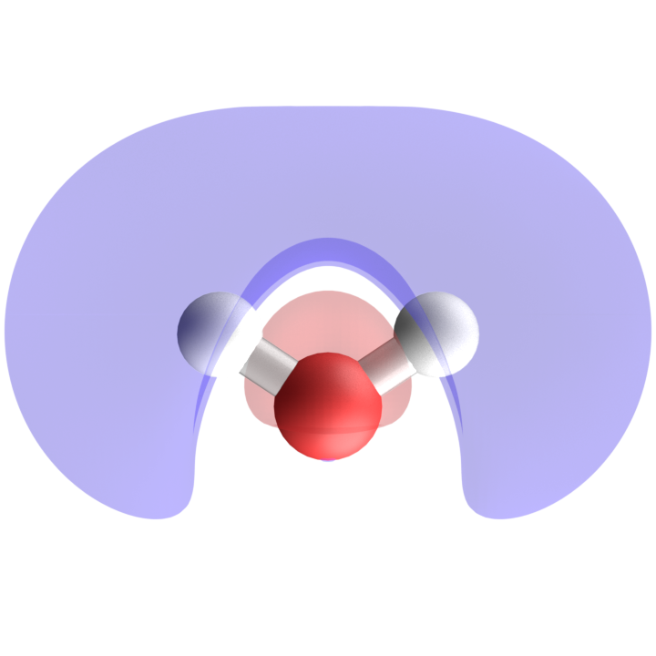
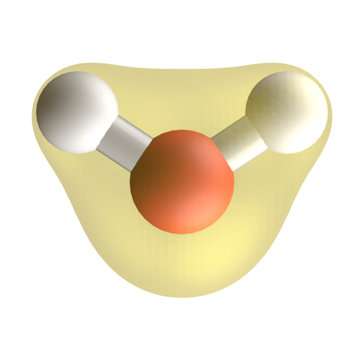

13 PySCF
Nesse capítulo vamos apresentar o pacote PySCF, que é uma biblioteca de código aberto para cálculos de química quântica. O PySCF é escrito em Python e C, e oferece uma ampla gama de funcionalidades para cálculos de estrutura eletrônica, incluindo métodos de Hartree-Fock, DFT, e métodos pós-Hartree-Fock.
Seu website oficial é https://pyscf.org, onde você pode encontrar documentação detalhada, tutoriais e exemplos de uso.
13.1 Instalação
A instalação do PySCF pode ser feita facilmente usando o gerenciador de pacotes pip. Para instalar o PySCF, você pode executar o seguinte comando no terminal:
pip install pyscfVocê pode verificar se a instalação foi bem-sucedida executando o seguinte comando no terminal:
python -c "import pyscf; print(pyscf.__version__)"13.2 Criando uma molécula
No PySCF, você pode criar uma molécula usando a classe Mole do módulo gto.
A seguir, apresentamos um exemplo de como criar uma molécula de hidrogênio (H2) com a base sto-3g:
from pyscf import gto
mol_h2 = gto.M(
atom = [['H',(0, 0, 0)], ['H',(1, 0, 0)]],
basis = 'sto-3g')Outro exemplo é a criação de uma molécula de água (H2O) com a base 6-31g:
mol_h2o = gto.M(
atom = [['O',(0, 0, 0)], ['H',(0.7586, 0.5043, 0)], ['H',(-0.7586, 0.5043, 0)]],
basis = '6-31g')As unidades de distância são em Angstroms, e a base especificada é usada para os cálculos eletrônicos.
13.3 Cálculos Auto-Consistentes de Energia
13.3.1 Cálculos de Hartree-Fock
No PySCF, você pode realizar um cálculo de Hartree-Fock usando a classe RHF (Restricted Hartree-Fock) do módulo scf.
A seguir, apresentamos um exemplo de como realizar um cálculo de Hartree-Fock para a molécula de hidrogênio (H2):
from pyscf import scf
rhf_h2 = scf.RHF(mol_h2)
e_h2 = rhf_h2.kernel()com e_h2 contendo o valor da energia de Hartree-Fock para a molécula de hidrogênio (em unidades atômicas de energia, Hartree) e o output do cálculo será algo como:
converged SCF energy = -1.06610864931794Para a molécula de água (H2O), o cálculo de Hartree-Fock seria realizado da seguinte forma:
rhf_h2o = scf.RHF(mol_h2o)
e_h2o = rhf_h2o.kernel()cujo output será algo como:
converged SCF energy = -75.98201030622513.3.2 Cálculos de DFT
No PySCF, você pode realizar um cálculo de DFT usando a classe RKS (Restricted Kohn-Sham) do módulo scf.
A seguir, apresentamos um exemplo de como realizar um cálculo de DFT para a molécula de água (H2O) usando o funcional B3LYP:
from pyscf import scf
rks_h2o = scf.RKS(mol_h2o)
rks_h2o.xc = 'b3lyp'
e_h2o_dft = rks_h2o.kernel()cujo output será algo como:
converged SCF energy = -76.378049387330213.4 Orbitais moleculares e Densidade Eletrônica
13.4.1 Orbitais Moleculares
No PySCF, você pode acessar os orbitais moleculares (MOs) e suas energias após a convergência do cálculo de Hartree-Fock ou DFT.
from pyscf.tools import cubegen # para exportar aquivos cube
hartree_to_ev = 27.2114 # Conversão de Hartree para eV
# Exportanto os 8 primeiros orbitais moleculares
for i in range(8):
cubegen.orbital(mol_h2o, f'h2o_mo_id{i+1}.cube', rhf_h2o.mo_coeff[:,i])
print(f"MO {i+1} energy: {rhf_h2o.mo_energy[i]*hartree_to_ev} eV")cujo output será algo como:
MO 1 energy: -559.0648505073075 eV
MO 2 energy: -37.35824208425234 eV
MO 3 energy: -20.472436335886574 eV
MO 4 energy: -15.010271665557314 eV
MO 5 energy: -13.620368424502718 eV
MO 6 energy: 5.892416334684666 eV
MO 7 energy: 8.489434880237042 eV
MO 8 energy: 30.794397465074287 eVe os arquivos h2o_mo_id1.cube, h2o_mo_id2.cube, …, h2o_mo_id8.cube serão gerados, podendo ser visualizados em softwares de visualização molecular, como o VESTA.


Outro comando útil é o método analyze() que fornece informações detalhadas sobre a densidade eletrônica, populações de Mulliken, energias dos orbitais moleculares, entre outros dados:
rhf_h2o.analyze()cujo output será algo como:
**** MO energy ****
MO #1 energy= -20.5452439237712 occ= 2
MO #2 energy= -1.37288938034252 occ= 2
MO #3 energy= -0.752347778353432 occ= 2
MO #4 energy= -0.551617030566502 occ= 2
MO #5 energy= -0.500539054385394 occ= 2
MO #6 energy= 0.216542196825032 occ= 0
MO #7 energy= 0.311980819812176 occ= 0
MO #8 energy= 1.13167266164454 occ= 0
MO #9 energy= 1.16714239571367 occ= 0
MO #10 energy= 1.18839667472837 occ= 0
MO #11 energy= 1.21799463765162 occ= 0
MO #12 energy= 1.40648729738536 occ= 0
MO #13 energy= 1.67628216207442 occ= 0
** Mulliken atomic charges **
charge of 0O = -0.66401
charge of 1H = 0.33200
charge of 2H = 0.33200
Dipole moment(X, Y, Z, Debye): 0.00000, 2.45844, -0.00000
((array([1.99998907e+00, 1.59484969e+00, 3.37983153e-03, 1.32200180e+00,
1.73548741e+00, 1.99560867e+00, 6.39191091e-03, 1.90976617e-03,
4.39132862e-03, 6.46096227e-01, 2.18990368e-02, 6.46096227e-01,
2.18990368e-02]),
array([-0.66400947, 0.33200474, 0.33200474])),
array([ 1.25552744e-14, 2.45844212e+00, -1.20462032e-16]))13.4.2 Densidade eletrônica
No PySCF, você pode calcular a densidade eletrônica usando o método get_density() do objeto de cálculo SCF. A densidade eletrônica é uma função que descreve a distribuição de elétrons na molécula.
cubegen.density(mol_h2o, 'h2o_den.cube', rhf_h2o.make_rdm1())cujo output será um arquivo h2o_den.cube que pode ser visualizado em softwares de visualização molecular, como o VESTA.

13.4.3 Potencial eletrostático molecular
No PySCF, você pode calcular o potencial eletrostático molecular (MEP) usando o método get_mep() do objeto de cálculo SCF. O MEP é uma função que descreve a distribuição do potencial elétrico gerado pelos elétrons e núcleos da molécula.
cubegen.mep(mol_h2o, 'h2o_pot.cube', rhf_h2o.make_rdm1())cujo output será um arquivo h2o_pot.cube que pode ser visualizado em softwares de visualização molecular, como o VESTA.